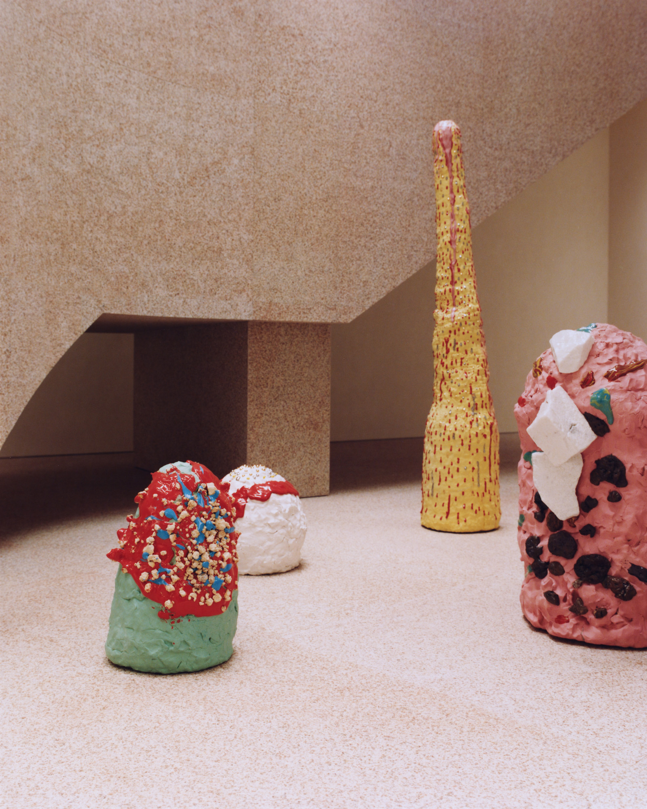

Pink, when laid as paint, ages quickly. Pink, when burned into granite, behaves like weather. The new Acne Studios flagship in Aoyama is built on that distinction, and on the conviction that minimalism does not have to flinch at colour.
Jonny Johansson has been visiting Tokyo since the mid-nineties, before Acne Studios sold a single garment in Japan. The relationship has hardened, in a quiet way, into something the brand now treats as constitutional. Aoyama is the address every house auditions for. Acne already had a small shop on a nearby backstreet. The new building is the first one the label has felt large enough to warrant a stage.
The site sits on a corner where the streetscape changes pace, hard glass on one side, low residential blocks on the other. Halleroed, the Stockholm studio that has shaped the look of Acne’s stores for over a decade, was given the brief and a former garage to demolish. What they did with it is the most considered piece of retail architecture the brand has produced.
The granite
Pink is the colour Acne has slowly turned into a property line. The wrong pink can read childish or grocery-aisle. Halleroed’s answer was to remove pink from paint altogether and find it inside stone. The exterior is wrapped in a granite that, when flame-finished, blooms a quiet rose. The treatment is industrial. The result is closer to silk than concrete. Touch the wall and you feel rough mineral, look at it from across the street and the whole facade hums.
Ruxandra Halleröd, who runs the studio with her husband Christian, talks about pink as a material rather than a tone. The Acne version is, she says, deliberately vague. It refuses to settle into either girlish or grown-up registers. That ambiguity is what makes it work. Pink that argues with itself stays interesting after the first photograph.
Garage turned inside out
Johansson’s instruction to the architects, by his own account, was to keep the bones. The original building was knocked back to a skeleton. Glass took the place of walls wherever structural logic allowed. The store now reads as a small, self-contained pavilion in which the boundary between Aoyama’s pavement and the brand’s collection has been deliberately thinned.
You see the rails before you reach the door. You see the seating before you see the price tag. The customer walks through what was once a service space, and the building admits, openly, that its previous life was utilitarian. There is no attempt to disguise the geometry. The interior is exposed; the exterior is dressed up. It is a kind of inversion, and it explains why the store feels neither precious nor cold.
We are from a minimalist country, but we are maximalist in the sense that we like to play. Fashion is supposed to be fun.
Jonny Johansson, founder and creative director, Acne StudiosThe collaborators

Inside the Aoyama flagship, where Max Lamb’s tufted rugs and vinyl seating play against minimalist rails and ceramics by Takuro Kuwata. Photography by Den Niwa / Wallpaper*
Acne’s house style now rests heavily on a small group of artists and designers it returns to season after season. Max Lamb’s presence is everywhere. His ‘Blob’ chairs sit in hand-dyed yarn. His tufted rugs and vinyl-leather banquettes argue, agreeably, with the sleek metal racks and large reflective surfaces that hold the clothes. The contrast is the point. Polished where the eye lands, soft where the body might.
Benoit Lalloz, the lighting designer who has shaped the brand’s recent shows in Paris, was commissioned to draw custom strip-lighting for the new space. It runs in long horizontals, casts neither glamour nor clinic, and lets the granite walls keep doing their work after dark. To mark the opening, the Japanese ceramicist Takuro Kuwata produced a series of candy-bright vessels, glaze pooling thick at the rim. The objects sit on plinths at the front of the store and read, deliberately, as conversation rather than merchandise.
Why now
The Tokyo opening lands during a busy season for European fashion in Japan. Dior staged its golden bamboo pavilion earlier in the year. Lemaire moved into a converted nineteen-sixties home in Ebisu. Plan C took its first international flagship in the city. Korean labels like Matin Kim are following the same flight path, opening in Harajuku and watching the queues form. Tokyo is not a soft launch market. The customers who walk in are knowledgeable, exacting, and unforgiving of poor finishing.
Acne’s answer is to build a building that is nearly impossible to copy. The pink granite is the headline detail, but the real argument is structural. The brand is treating Aoyama as the place where its design language gets stress-tested in public. Stockholm minimalism is sometimes accused of being too restrained for warmer climates. The Aoyama store rebuts the critique on its own terms. Minimalism, here, is allowed to flirt.
What stays with you, walking out, is not the pink but the ease. The store does not lecture. It does not insist on its own taste. It opens the building, hands you the clothes, and lets you decide whether the colour reads serious or playful. That confidence is the architecture. Everything else is the dress.